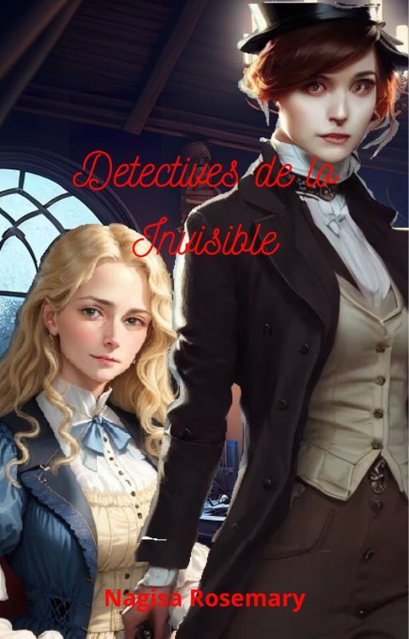

|

|
Stories
Detectives of the Unseen
Chapter 1
It was a foggy morning like many others. From the window of her studio, sit on a chair made of dark wood and black leather, detective Mary Anne Edevane looked at the buildings that she had in front of her. She could see the humidity condensate in the glass of the window, half lost in her thoughts.
She had a police report in her hands. It was a case that the London Police Force couldn't solve by itself, and like many others, it was entrusted to her because of her skills and her wit. Many others compared her with Sherlock Holmes and other fictional detectives, famous for being infallible. And she was infallible too. At least, until that moment.
That case was making her go nuts. She kept looking at the papers over and over again. She turned the pages, looked and annalized each word, each phrase, each parragraph, even small notes and improvised sketches from whoever wrote that. Even if everything was well detailed, there were things she couldn't get at all. There were missing data for her equation, the situation seemed impossible.
For the first time, Mary Anne couldn't get an answer. She kept stuck for two days in that situation and she was tired of reaching a dead end. The only thing that took her off from her loop of hyphotesis and doubts was a series of soft hits at the studio door, which was already open, but whoever called always had the preference to call first.
¿Do you like this beggining? Keep reading in my Wattpad.
|